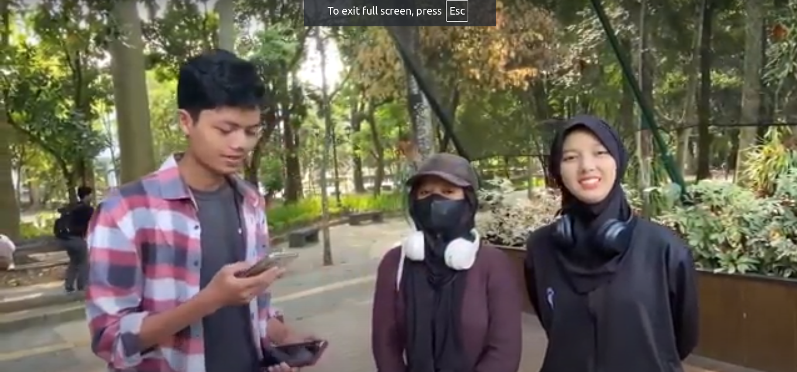

Pembangunan Berkelanjutan/Sustainable Development Goals (SDG’s). Wacana pembangunan berkelanjutan (Sustainable Development) adalah konsep pembangunan yang memenuhi kebutuhan masa kini tanpa mengorbankan kemampuan generasi mendatang untuk memenuhi kebutuhan mereka sendiri. Pembangunan berkelanjutan menekankan keseimbangan antara pertumbuhan ekonomi, perlindungan lingkungan, dan kesejahteraan sosial. Wacana ini juga tercermin dalam 17 Tujuan Pembangunan Berkelanjutan (Sustainable Development Goals atau SDGs) yang diadopsi oleh PBB. Sidang Umum PBB 25 September 2015 pendeklarasian oleh negara maju maupun negara berkembang mengenai komitmen global dan nasional dalam upaya untuk menyejahterakan masyarakat mencakup 17 tujuan dan sasaran global tahun 2030.
Prinsip-prinsip utama dari pembangunan berkelanjutan meliputi:
Keberlanjutan Ekonomi:
1. Mencapai pertumbuhan ekonomi yang stabil dan inklusif, yang tidak merusak lingkungan atau sumber daya alam.
Keberlanjutan Lingkungan:
2. Melindungi dan memelihara ekosistem serta keanekaragaman hayati, mengurangi polusi, dan mengelola sumber daya alam secara bijaksana agar tetap tersedia untuk generasi mendatang.
Keberlanjutan Sosial:
3. Memastikan kesejahteraan sosial dengan mengurangi kemiskinan, kesenjangan, dan memastikan akses yang adil terhadap sumber daya dan peluang.

Air Bersih dan Sanitasi Layak :
Menjamin ketersediaan dan pengelolaan air dan sanitasi yang berkelanjutan.
Indikator :
1. Presentase rumah tangga yang menggunakan layanan air minum yang dikelola secara aman
2. kualitas air permukaan dan air tanah sebagai air baku
3. Tingkat pelaksanaan pengelolaan sumber daya air secara terpadu

Menurut Najwa dan Deandra sendiri air di wisdom merupakan sebuah ornamen penting dalam kehidupan di UGM, karena menyangkut banyak kehidupan, ada yang berada di dalam air sendiri yaitu ikan-ikan dan biota air lainnya serta air minum juga yang digunakan oleh manusia. Air juga merupakan salah satu bentuk penambahan oksigen agar lebih banyak.
Sebagai orang yang sering datang ke wisdom park sebagai pengunjung, Najwa dan Deandra merasa bahwa kualitas air di wisdom awalnya bersih, namun sekarang cukup kotor karena ada beberapa sampah. Namun, terkadang kualitas air juga berubah-ubah.
Menurut mereka juga, keadaan di wisdom park ini sangatlah asri. Sebagai seseorang yang menggunakan mechanism atau mekanisme dalam penekanan stress dari tugas adalah dengan jogging dan berkeliling wisdom park. Namun, mereka sangat menyayangkan ada beberapa pohon yang runtuh sehingga udara jadi lumayan panas karena berkurangnya pohon di wisdom park.

Menurut Mario air adalah kebutuhan yang sangat penting, karena setiap hari kita juga butuh air untuk keperluan minum dan bersih-bersih.
Menurut Jessica air juga sangat penting karena setiap hari tubuh perlu air , dan penting untuk kehidupan sehari-hari.
Menurut Mario kondisi air dulu awal awal ke wisdom park masih belum terawat, bau, masih menyengat sekali, irigasinya masih tersumbat, lalu untuk kondisi sekarang sudah membaik walaupun masih ada bau.
Menurut Jessica baru setelah pandemi datang, sudah cukup membaik namun masih ada bau-baunya sedikit, dan untuk keseluruhan tergolong baik.

Menurut beliau yang selaku sebagai pengunjung pertama kali mengunjungi Wisdom Park keadaan air masih kurang dan tentunya bisa ditingkatkan lebih bersih dan bagus lagi. Beliau melihat masih terdapat sampah daun pertama yang berserakan, mungkin masih bisa ditingkatkan lagi dengan upaya upaya seperti melepaskan ikan-ikan sebagai indikator kebersihan.
Menurut beliau air bersih dalam kehidupan sehari-hari , jadi memang benar-benar jangan sampai ada sampah.
Dari hasil kesimpulan didapat bahwa semua narasumber menjawab bahwa air merupakan kebutuhan yang paling penting bagi kehidupan. Kualitas air di sekitar area UGM dulunya masih kurang namun seiring berjalannya waktu kualitasnya membaik hingga seperti sekarang ini. Kualitas air dan dapat ditingkatkan dengan memperbarui fasilitas penyaringan dan peningkatan lainnya.
https://drive.google.com/file/d/1GxS4lfIx3nEi8VkwIcmBMQJM_roAawgi/view?usp=sharing
Pancasila bagi bangsa Indonesia adalah dasar negara yang menjadi representasi warga negara dan tujuan dalam bernegara.